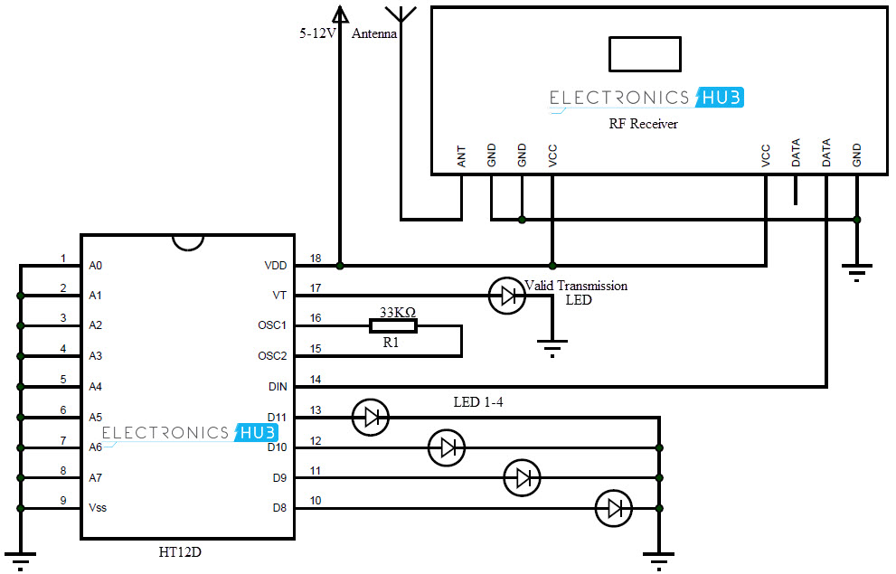

As i am an student of electronics Domain i did a project on transmitting data through RF signals it can transfer data for longer ranges with best quality Intership
I did my implant training in BSNL,Rajahmundry.I learned about telecommunication policies and real time problems faced in that departmentProgramming languages
I learned c language out of my interest.And i also had a moderate knowledge Python. I also had a decent knowledge in Html.